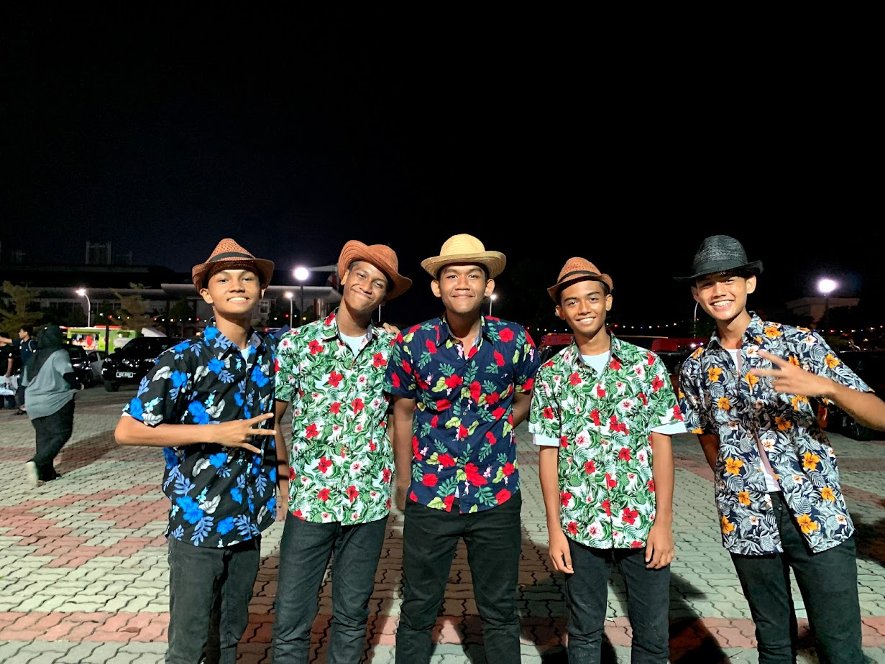
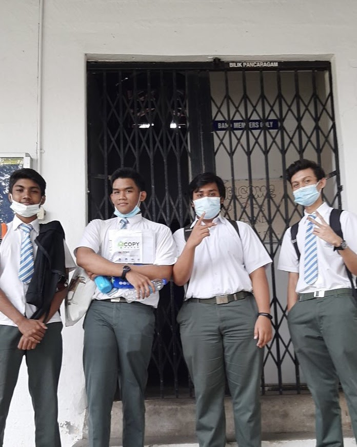
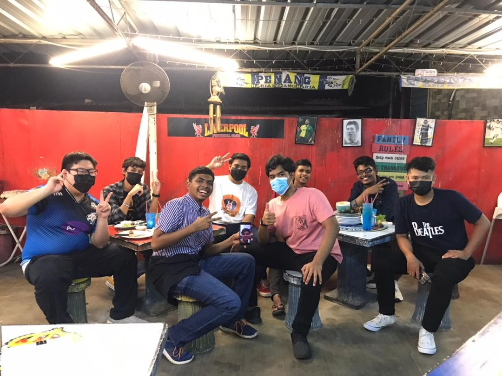
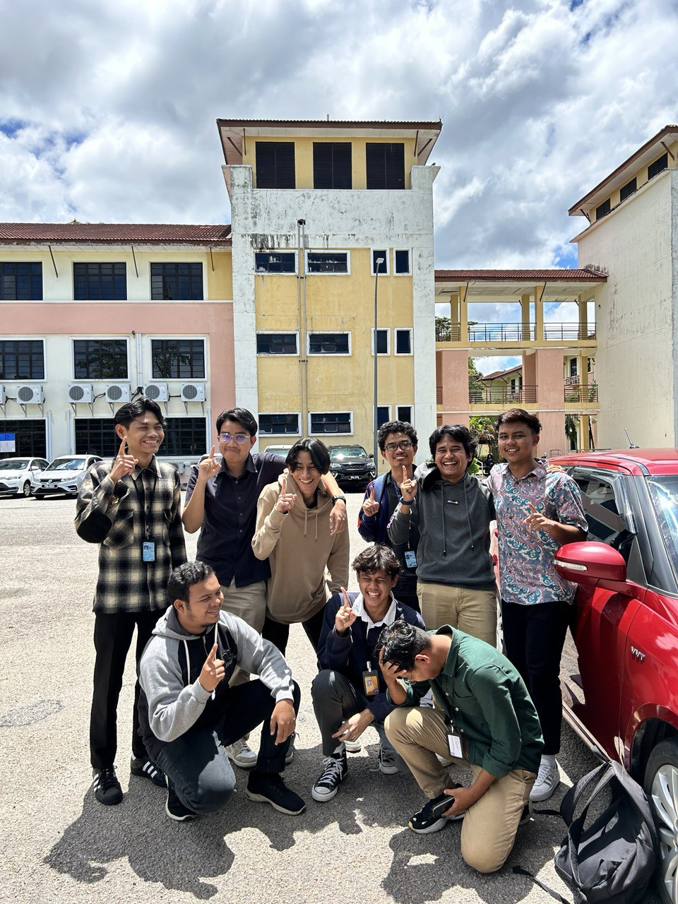
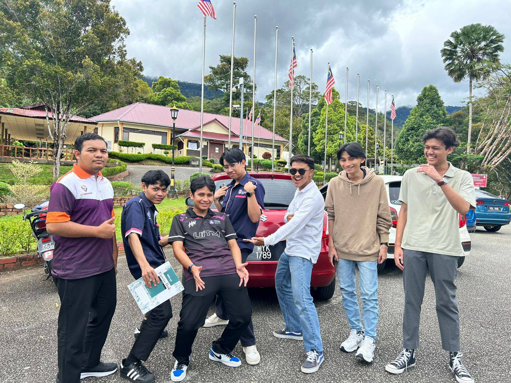
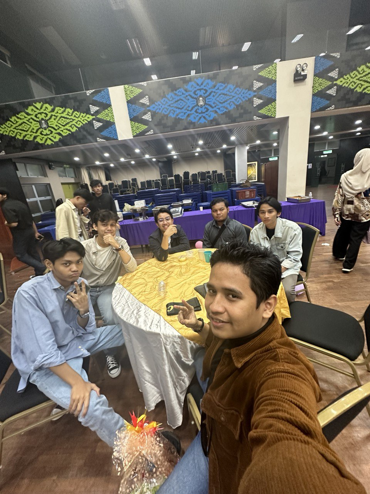
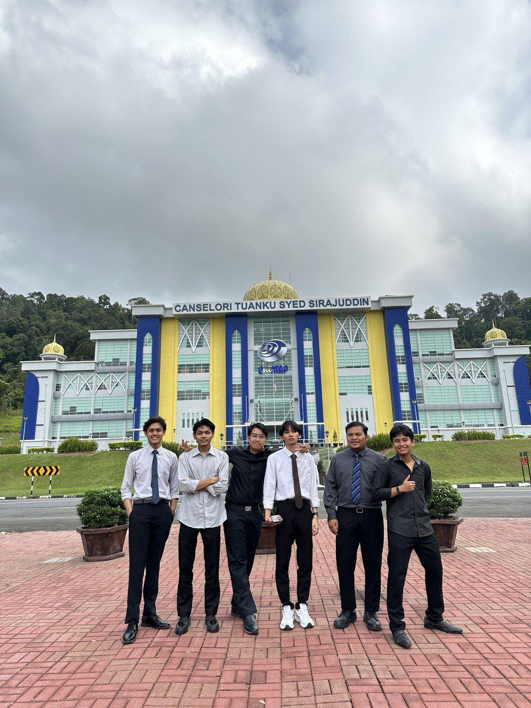

Bandmates from high school
  These are my friends from my high school years. We have known since form 1 in 2016. I never expected that we will be close during our school years, even until now.
We were always together throughout those days. Practicing together, eat together and even going out together. We mostly go to many competitions and shows together as a team that make us more closer. When we have the time, we would always go out to malls in Penang such as Gurney Plaza, 1st Avenue and so on. We didn't get to spend much time during our final years due to Covid-19 and that makes me sad that we don't have the chance to enjoy our Form 5 years much, but I'm grateful to meet them during my high school years.
University years
   When I'm in UiTM, I met these peeps from the same class. Since our second semester, we've been inseparatable ever since. We would always do our assignments together and even enjoy our university years together.
Some of my friends include Afiq Hakimi from Parit Buntar Perak, Afiq Zul from Cheras Kuala Lumpur, Farid from Kamunting Perak, Ammar from Manjung Perak and Wan from Ipoh Perak.